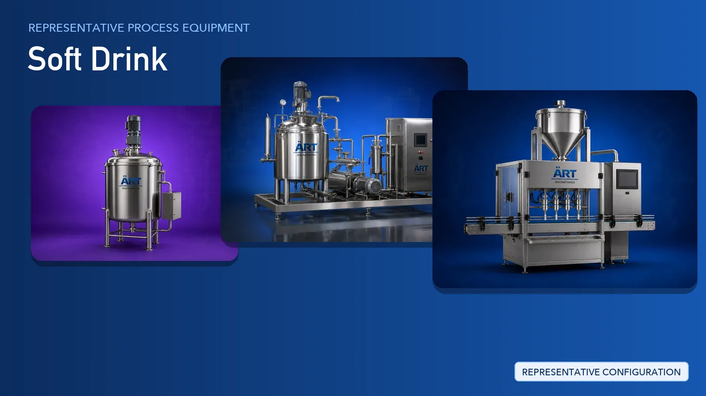

Soft Drink Plant & Machinery Solutions (Carbonated & Non-Carbonated Beverage Lines)
Soft drinks cover a wide range of carbonated and non-carbonated beverages, including flavoured sodas, cola-type drinks, refreshment and sports drinks, and ready-to-drink products made from syrups and concentrates.

About Soft Drink processing
ART Mechatronics provides complete turnkey solutions for soft drink plants, covering sugar and ingredient handling, syrup preparation and blending tanks, product conveying, filling and packaging lines, plant utilities, and dust and air pollution control. Our solutions are designed for hygienic operation, repeatable batch consistency, and smooth integration with new or existing beverage lines.
Complete Soft Drink Process Flow
Sugar, powdered ingredients and additives are received in bags and fed into the syrup room.
Ensures a clean and controlled ingredient feed.
Sugar and ingredients are dissolved in water to prepare the base syrup.
Ensures:
- Complete dissolving of ingredients
- Uniform syrup consistency
- Hygienic batch preparation
Base syrup, treated water, flavours and additives are dosed and blended into the final beverage batch.
Ensures:
- Accurate recipe dosing
- Batch-to-batch repeatability
- Traceable production records
The blended product is heat treated where the recipe requires it, then brought down to filling temperature.
Supports product safety and shelf stability.
Bottles and cans are rinsed, filled with the prepared beverage and sealed.
Carbonation and product-specific filling units are integrated with the line as per project scope.
Sealed containers are checked, labelled and coded before secondary packing.
Ensures correct fill, correct label and readable batch details.
Finished containers are collated into cartons or shrink packs and palletised for dispatch.
Suitable for retail and bulk distribution formats.
Plant utilities and air quality systems supplied alongside the line:
- Steam Generator and Boiler for process heating
- Chiller and Cooling Tower for product and utility cooling
- Air Handling Unit for clean filling room conditions
- Dust Collector Machine and Centralised Dust Collection System around sugar and powder handling
Turnkey Soft Drink Plant Solutions
ART Mechatronics offers complete turnkey solutions for soft drink plants, including:
- Process design & plant layout
- Syrup room and blending tank systems
- Product conveying and transfer systems
- Utility, heating and cooling systems
- Automation & control panels
- Filling and packaging line integration
- Dust collection and air pollution control
- Installation & commissioning
- After-sales support
We customize solutions based on:
- Product type (carbonated, non-carbonated, concentrate)
- Production capacity
- Container format (PET, glass, can)
- Automation level
Why Choose ART Mechatronics
- Experience in liquid processing and beverage plant engineering
- Hygienic food-grade tank and piping design
- Accurate weighing, dosing and blending systems
- Automated control with recipe management
- Integrated dust collection around sugar and powder handling
- Complete packaging line integration
- Global export capability
Where it's used
Get pricing & specs for the Soft Drink plant
Share the product, target capacity, current process and plant location. These details help our engineers discuss the right machine or line configuration.
One partner, from design to start-up
ART Mechatronics designs, manufactures, installs and commissions your Soft Drink plant solution with regional presence in India, UAE and Thailand.